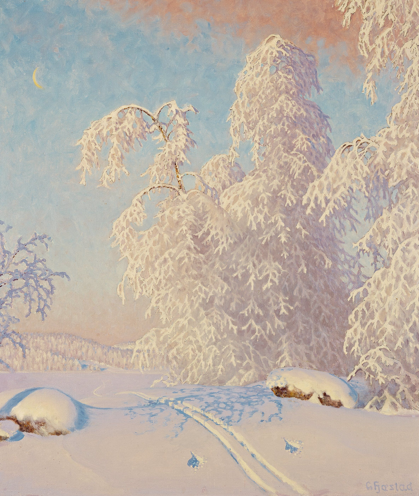

- jazz
- ballad
- kpop
favorite christmas playlist
12월 25일
favorite ballad playlist
Christmas is an annual festival commemorating the birth of Jesus Christ, observed primarily on December 25[a] as a religious and cultural celebration among billions of people around the world. A feast central to the Christian liturgical year, it is preceded by the season of Advent or the Nativity Fast and initiates the season of Christmastide, which historically in the West lasts twelve days and culminates on Twelfth Night.Christmas Day is a public holiday in many countries,is celebrated religiously by a majority of Christians,as well as culturally by many non-Christians,[1][10] and forms an integral part of the holiday season organized around it.
paragragh
Christmas is an annual festival commemorating the birth of Jesus Christ, observed primarily on December 25[a] as a religious and cultural celebration among billions of people around the world. A feast central to the Christian liturgical year, it is preceded by the season of Advent or the Nativity Fast and initiates the season of Christmastide, which historically in the West lasts twelve days and culminates on Twelfth Night.Christmas Day is a public holiday in many countries,is celebrated religiously by a majority of Christians,as well as culturally by many non-Christians,[1][10] and forms an integral part of the holiday season organized around it.
